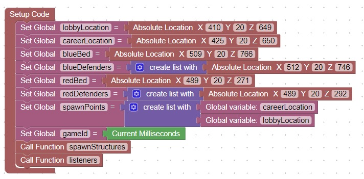

<H1>Organize Code part I</h1>
Its always good to look at your code and organize it by behavior<br>
This code shows how the setup code will look after you move the listeners and structure spawning into their own functions<br>
<br>

<hr>
<center></center>